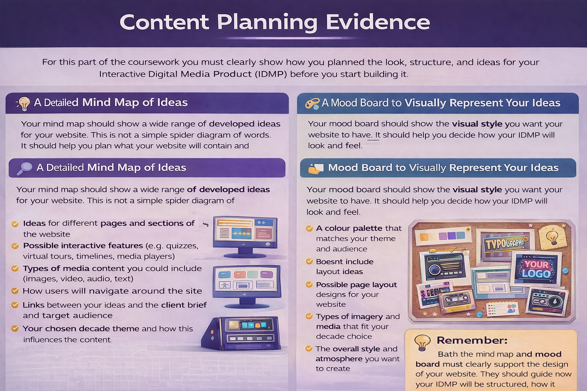

Task 1A(iii) Content ideas
Plan what pages/sections/content your website will include.
Content planning evidence
For this part of the coursework you must clearly show how you planned the look, structure, and ideas for your Interactive Digital Media Product (IDMP) before you start building it.
A Detailed Mind Map of Ideas
Your mind map should show a wide range of developed ideas for your website. This is not a simple spider diagram of words. It should help you plan what your website will contain and how it will work.
- Ideas for different pages and sections of the website
- Possible interactive features (e.g. quizzes, virtual tours, timelines, media players)
- Types of media content you could include (images, video, audio, text)
- How users will navigate around the site
- Links between your ideas and the client brief and target audience
- Your chosen decade theme and how this influences the content
A Mood Board to Visually Represent Your Ideas
Your mood board should show the visual style you want your website to have. It should help you decide how your IDMP will look and feel.
- A colour palette that matches your theme and audience
- Typography (font styles) you may use
- Branding ideas such as logos or titles
- Possible page layout designs for your website
- Types of imagery and media that fit your decade choice
- The overall style and atmosphere you want to create
Remember: Both the mind map and mood board must clearly support the design of your website. They should guide how your IDMP will be structured, how it will look, and how it will engage the target audience.
Common misses
Mind Map
- Lists topics instead of website features
- Doesn’t link ideas back to the client brief
- Ignores interactivity and navigation
- Doesn’t show ideas for pages/sections
- Too small, basic, or rushed to be useful planning evidence
Should show: features, pages, media, interactivity, user journey, and links to audience/purpose.
Mood Board
- Just random pictures (no design purpose)
- Doesn’t show colours, fonts, or branding
- Doesn’t include layout ideas
- Doesn’t match the chosen decade theme
- Doesn’t link choices to the target audience
Should show: colour palette, typography, branding, layout inspiration, and imagery style.
Key point: This is planning for a website. If it doesn’t help design the structure, look, and interactivity, it won’t gain marks.